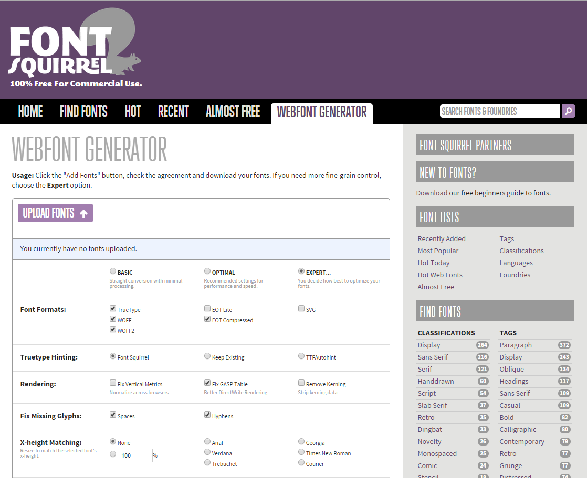
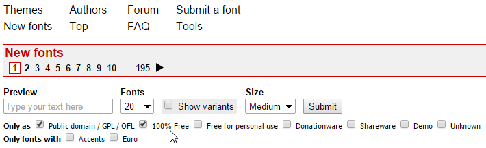

When specifying a web font in a CSS style, always list at least one fallback web-safe font in order to avoid unexpected behaviors. In particular, add a CSS generic font name likeseriforsans-serifto the end of the list, so the browser can fall back to its default fonts if need be. — Google Fonts
When choosing a font for the copy on your site, simple is better. Keep things clean and don't develop an over-complicated type. You can get more creative later with things like headlines and pull-quotes, but your body copy should always be clear and easy to read. — Mashable
This way is one of the simplest (and even better, it's free!). Google Fonts are a selection of open-source fonts that are already hosted for you on Google. They're easy to set up, but for advanced users, there are more tips and tricks in the Getting Started guide.
Tip: Using many font styles can slow down your webpage, so only select the font styles that you actually need on your webpage.
<link method belongs in the <head> section of your HTML and needs to be added to every page that uses the webfonts. This is the preferred method, but for class use, @import may be simpler.@import method needs to be added to your CSS. For highest compatibility, add it to the very beginning of your document.<script> (Javascript) method is the same as the <link> method; it should be added to the <head> on each page as necessary.body { font-family: 'Open Sans', sans-serif; }Self-hosted webfonts give you greater variety, but you also need to prepare your fonts for use on the web. In order to support various browsers, you need a few file formats that aren't used on the desktop. The easiest way is to convert your fonts through the webfont generator on FontSquirrel. For most purposes, the Optimal settings should be fine, but those looking for more options can enable Expert mode.
stylesheet.css to see how to reference your font name. Sometimes, you will want to rename this. For instance, I'd change font-family: 'ostrich_sansheavy'; to font-family: 'Ostrich Sans Heavy';. Note that you do not specify a fallback font here. This is the name that you'll use to reference the font in your main CSS.
font-family: 'Ostrich Sans'; and change font-weight: normal; to something more appropriate, like font-weight: 900;. You can do the same with italics (changing the font-weight. That way, my font family would be linked together and I could simply change the weight and style as needed.
@font-face code is all prepared. Link to your webfont CSS just like you'd link to your main CSS:
<link rel="stylesheet" type="text/css" href="stylesheet.css">.
I find that filename a little vague, so in my own workflow, I rename stylesheet.css to fontname-wf.css and have my site files organized like so:
project-name/
images/
webfonts/
ostrichsans-wf.css
OstrichSans-Heavy-webfont.eot
OstrichSans-Heavy-webfont.ttf
OstrichSans-Heavy-webfont.svg
OstrichSans-Heavy-webfont.woff
OstrichSans-Heavy-webfont.woff2
index.html
style.css
In my HTML, I'd add <link rel="stylesheet" type="text/css" href="webfonts/ostrichsans-wf.css"> right before I linked to my main stylesheet. Since I moved my files into a webfonts folder, that needs to be referenced in the path to the webfont CSS.
h1 { font-family: 'Ostrich Sans Heavy', sans-serif; }Typekit is a subscription font service that brings thousands of fonts from foundry partners into one library for quick browsing, easy use on the web or on your desktop, and endless typographic inspiration.
Typekit was acquired by Adobe and integrated into Creative Cloud, so you may already have a membership. Webfonts are hosted by Typekit. There are multiple payment plans, from free to premium service with a yearly subscription.
The number-one rule: only use fonts you have permission to use. Even if you pay for a font, webfont use might be disallowed or require an additional license, and yes, companies do get in trouble for this. Be ethical with your design and development. You can view a list of providers at webfonts.info or read below for a few recommendations.
MyFonts is mostly a service for commercial fonts. Webfonts require a different license than desktop fonts, but you can save money by purchasing both together. You can find a few free fonts, but most are demos or dingbat/ornamental versions. Their newsletter is a great read and you can often get awesome introductory pricing or discounts on their Special Offers page.
FontSpring offers "worry-free, perpetual font licensing for everyone." Their license FAQ is extremely helpful and easy to understand.
Creative Market is a general marketplace for design resources, but their font section has some gorgeous options. There are also free files (fonts included) every week; this is a great way to add to your arsenal. Just make sure that any fonts you purchase allow for webfont use.
You Work For Them (YWFT) is another marketplace, but there are many fonts here that can't be found elsewhere. Watch for their huge sales!
Many type designers sell their fonts on their own sites. If you find a company you like, visit their company page. Some companies sell their fonts at a discount this way.
CSS-only (no Javascript) webfonts from the Hoefler Type Foundry optimized for screen use. They are hosted by Hoefler & Co. You can purchase fonts for web use only or you can use the fonts that you've already licensed for the desktop, but those still require a Cloud.typography subscription.
Lost Type has a pay-what-you-want model for personal use (yes, $0 is valid) but requires a minimum donation for commercial use. Most of their fonts are display fonts.
Each week at Fontfabric, a new and totally unique font will be rolled out of production, which you can easily buy or download free of charge. Fontfabric is an independent type foundry.
Home of the webfont generator, FontSquirrel also collects and categorizes free fonts. Make sure that you look for the appropriate license type; here's the link to webfonts.
In the spirit of sharing, all fonts made available by The League are subject to SIL’s Open Font License. It means that you’re allowed to use these fonts personally or commercially, as long as you credit the original creator, and if you made tweaks and changes to the typefaces, any new typefaces resulting from it should be licensed under the same terms. That way all our fonts and any new fonts resulting from them will always be open.
Dafont has a huge collection of free fonts, mostly display fonts (things you'd use for headlines, not body copy). Though there are some gems here, there are also a lot of poorly-designed and poorly-kerned fonts; be careful with what you select. Also, pay attention to the licenses: fonts here can be public domain / GPL / OFL, 100% free, free for personal use (meaning: not for commercial work with clients), donationware (requires a donation to use), shareware, and demo (may be lacking some letters, symbols, or features). Those that are free for personal use can often be used in commercial work if you pay for a license, but it varies on each font.
To make sure that you can 100%-free use a font, use the following settings in your search:
If you're not seeing those options, click More options next to the Submit button.
As students and designers, one of the best things you can do is read design blogs.